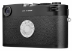
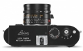

器材库 > 35mm画幅可换镜头数码相机 > M-D

规格总览
产品类型
35mm画幅可换镜头数码相机
发布日期
2016-04-28
影像规格
影像传感器
CMOS
影像传感器尺寸
35.8×23.9mm
有效像素
2400万
影像处理器
Maestro 处理器
静态图像格式
DNG
静态图像尺寸
5976×3992
镜头和对焦
镜头卡口
Leica M
兼容镜头
徕卡M型镜头
曝光控制
测光模式
中央重点测光
测光范围
0EV~20EV
曝光模式
光圈优先，手动曝光
快门速度
60 - 1/4000秒
曝光补偿
±3EV以1/3EV级调整
ISO感光度
ISO 200 - 6400，可手动调至 1/3 ISO级别
连拍
每秒3张
闪光灯
外接闪光灯
徕卡系统闪光灯如SF 40、SF 64、SF 58；具备系统3000的SCA（System-Camera-Adaption）的技术条件、备有SCA-3502-M5转接头的闪光灯。
取景器/显示屏
取景放大倍率
0.68倍
文件输入/输出
内置存储容量
1GB
存储卡
SD/SDHC, SDXC
电源
电池
锂离子充电电池 BP-SCL2
机身规格
材质
全金属外壳以镁合金/铝合金制成，皮套，顶盖及底盖以黄铜制成，两者都有黑色漆面的表面处理。
颜色
黑色
尺寸
138.6×42×80mm
重量
含电池约720g
其它
配件端口
热靴, 脚架螺丝孔
工作温度
0~40℃
附件
充电器，充电线，锂离子电池，背带，机身盖，配件热靴盖
该产品暂无存档的网友点评
产品图 / 样片
Leica M-D
Leica M-D

Leica M-D
评测 / 相关文章
- 详细内容 （存档）
- ［资讯］徕卡M红色限量款发售 （存档）
- ［资讯］徕卡M-D Typ 262售价高达4万人民币 （存档）
- ［资讯］快看看！这就是徕卡M-D Typ 262 （存档）
- ［资讯］Leica M-D Typ 262即将到来 （存档）
- ［资讯］LEICA M（Typ 262）在韩国机构注册 （存档）